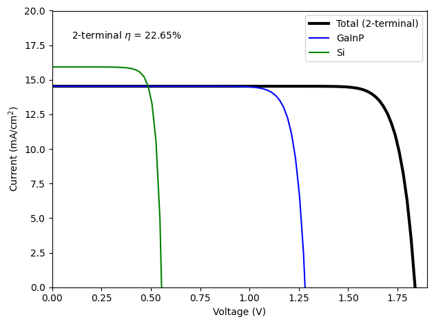

This example is partly based on the structure presented in this paper, but with planar interfaces instead of a textured Si surface. This is a four-terminal GaInP/Si device which uses an epoxy and glass to bond the two cells together mechanically. First, we will do optical-only calculations to look at the effect of an intermediate anti-reflection coating (on top of the epoxy/glass) on the absorption in the bottom Si cell, and then we will use the results of the optical calculation to do a device simulation and calculate external quantum efficiency and current-voltage under AM1.5G.
Note: the paper linked above has a GaInP/AlGaInP heterojunction as the top junction. Because we do not have AlGaInP built in to Solcore’s database, this is replaced by a GaInP homojunction in this example.
WARNING: The RCWA solver will not be available because an S4 installation has not been found.
/Users/z3533914/.pyenv/versions/3.11.5/lib/python3.11/site-packages/solcore/registries.py:73: UserWarning: Optics solver 'RCWA' will not be available. An installation of S4 has not been found.
warn(
Defining materials, layers and junctions
The paper referenced above uses a double-layer anti-reflection coating (ARC) made of MgF\(_2\) and ZnS. As in the previous example, we use the interface to the refractiveindex.info database to select optical constant data from specific sources, and define Solcore materials using this data. The III-V materials are taken from Solcore’s own material database.
Note that for the epoxy/glass layer, we use only a single material (BK7 glass). The epoxy and glass used in the paper have the same refractive index (n = 1.56), so we can use a single material with an appropriate refractive index to represent them.
download_db(confirm=True) # uncomment to download database
Database file found at /Users/z3533914/.solcore/nk/nk.db
Making request to https://refractiveindex.info/download/database/rii-database-2021-07-18.zip
Downloaded and extracting...
Wrote /var/folders/wh/w5k56r_927j4yp3mh91bggfc0000gq/T/tmpxl4nacr8/database from https://refractiveindex.info/download/database/rii-database-2021-07-18.zip
LOG: 2746,other,PtAl2,Chen : Bad Material YAML File.
***Wrote SQLite DB on /Users/z3533914/.solcore/nk/nk.db
/Users/z3533914/.pyenv/versions/3.11.5/lib/python3.11/site-packages/solcore/material_data/refractiveindex_info_DB/dbmaterial.py:278: RuntimeWarning: invalid value encountered in sqrt
n = numpy.sqrt(nsq)
/Users/z3533914/.pyenv/versions/3.11.5/lib/python3.11/site-packages/solcore/material_data/refractiveindex_info_DB/dbmaterial.py:299: RuntimeWarning: invalid value encountered in sqrt
n = numpy.sqrt(n)
For the Si cell, the front surface has both a low-index and high-index SiN\(x\) layer. The rear surface uses Al\(2\)O\(3\), and the cell has Al at the rear surface.
Database file found at /Users/z3533914/.solcore/nk/nk.db
1 results found.
pageid shelf book page filepath hasrefractive hasextinction rangeMin rangeMax points
2816 other SiN Vogt-1.91 anti-reflective coatings/SiN/Vogt-1.91.yml 1 1 0.25 1.7 146
Database file found at /Users/z3533914/.solcore/nk/nk.db
1 results found.
pageid shelf book page filepath hasrefractive hasextinction rangeMin rangeMax points
2818 other SiN Vogt-2.13 anti-reflective coatings/SiN/Vogt-2.13.yml 1 1 0.25 1.7 146
We now define the layers used in the top cell stack: the ARC and window layer for the top cell, and the GaInP junction itself. The ARC and window layers are not involved in the electrical calculation using the depletion approximation, so they are defined as simple layers, while the GaInP emitter and base are defined as part of a Junction object.
We now define the spacer layer, with and without a ZnS anti-reflection coating, so we can compare their performance in the cell stack. Note that we set the epoxy thickness here to be 10 microns, although the real thickness is much higher - this is because the epoxy/glass is not absorbing at the wavelengths which are able to reach it (which are not absorbed in the GaInP top cell), and we will treat it incoherently (no thin-film interference), so the exact thickness does not matter.
spacer = [ Layer(82e-9, ZnS), Layer(10e-6, epoxy), # real thickness is much higher, but since this layer is# non-absorbing at the relevant wavelength (> 650 nm) and treated incoherently,# this does not matter]spacer_noARC = [ Layer(10e-6, epoxy),]
Now we define the layer stacks for the Si cell, including the front SiO\(_x\)/SiN\(_x\) stack, the junction itself, and the back dielectric layers.
Comparing the optical performance with and without intermediate ARC
Now we will run the calculation. We will treat some of the layers (those above the epoxy) with a coherent TMM calculation, and the epoxy and the layers below it using incoherent TMM. We will discuss the difference this makes, why this is important, and when to use coherent and incoherent layers.
Now we define two versions of the cell for optical calculations, without and with the ZnS anti-reflection coating on the epoxy. Note that we also set the substrate for the calculation (aluminium) here.
We set the appropriate coherency list for the structure (a list with entry ‘c’ for a coherent layer or ‘i’ for an incoherent layer), and solve for the cell optics of the cell without the intermediate ARC. We get the total absorption in the GaInP and Si junctions.
Treating layer(s) 11 incoherently
Calculating RAT...
Database file found at /Users/z3533914/.solcore/nk/nk.db
Material main/MgF2/Rodriguez-de Marcos.yml loaded.
Database file found at /Users/z3533914/.solcore/nk/nk.db
Material main/MgF2/Rodriguez-de Marcos.yml loaded.
Database file found at /Users/z3533914/.solcore/nk/nk.db
Material main/ZnS/Querry.yml loaded.
Database file found at /Users/z3533914/.solcore/nk/nk.db
Material main/ZnS/Querry.yml loaded.
Database file found at /Users/z3533914/.solcore/nk/nk.db
Material anti-reflective coatings/SiN/Vogt-1.91.yml loaded.
Database file found at /Users/z3533914/.solcore/nk/nk.db
Material anti-reflective coatings/SiN/Vogt-1.91.yml loaded.
Database file found at /Users/z3533914/.solcore/nk/nk.db
Material anti-reflective coatings/SiN/Vogt-2.13.yml loaded.
Database file found at /Users/z3533914/.solcore/nk/nk.db
Material anti-reflective coatings/SiN/Vogt-2.13.yml loaded.
Calculating absorption profile...
As above, but for the cell with an intermediate ARC:
We see that the cell without an ARC on the epoxy shows much stronger interference fringes (due to the thickness of the top stack), and higher reflectance overall in the long-wavelength region (at short wavelengths, light is absorbed before it is able to reach the epoxy at all). Before doing an actual electrical calculation, we will calculate the limiting current in both of the sub-cells (assuming all the generated charge carriers can be collected):
Limiting short-circuit currents without ARC (mA/cm2): 16.4 / 15.5
Limiting short-circuit currents with ARC (mA/cm2): 16.4 / 17.4
As expected from the reduced reflection and increased absorption in the Si, the cell with an intermediate ARC has significantly higher maximum current in the bottom Si cell.
EQE and IV calculation
Now, just taking the structure with an intermediate ARC, we do a cell calculation using the depletion approximation.
Treating layer(s) 12 incoherently
Calculating RAT...
Calculating absorption profile...
Solving IV of the junctions...
Solving IV of the tunnel junctions...
Solving IV of the total solar cell...

Two vs. four-terminal efficiency
By default, Solcore assumes any SolarCell object is a two-terminal device, and will thus calculate the total I-V curve assuming the cells are connected in series and that the current is limited by the lowest-current sub-cell. However, it will also calculate the I-V curves of the individual cells, so we can use this information to calculate the possible power output in a 4-terminal configuration where the cells operate independently from an electrical point of view:
What causes the strange, sharp fringes in the simulation data of Fig. 1 in the reference paper? Can you reproduce them by modifying this code? Which version of the simulation do you think is more correct, and why?
How could you increase the current in one or both of the sub-cells (remember, unlike the paper, we assumed all the layers in the cell are planar!).
Once the light encounters an ‘incoherent’ (thick) layer, does it make sense to treat any layers below that as coherent?